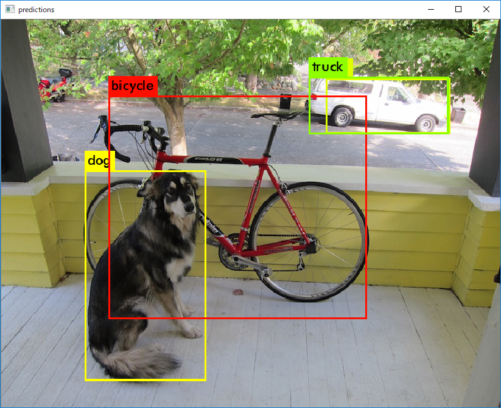
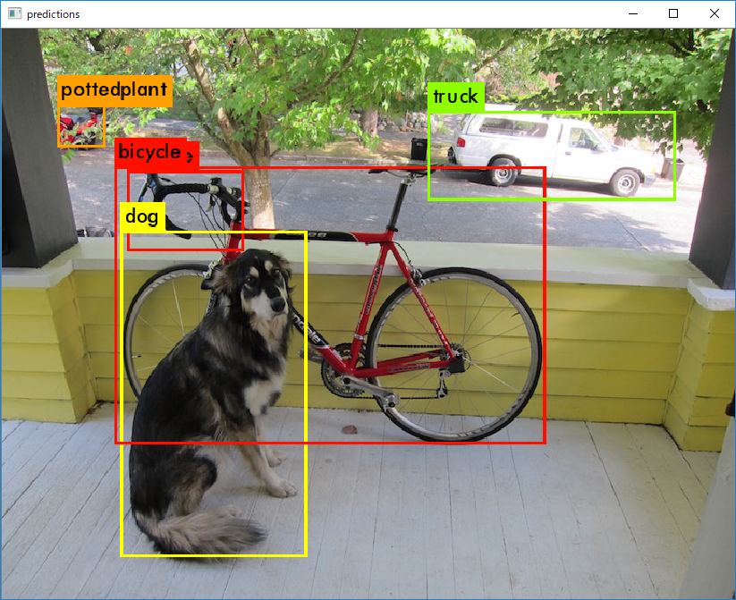
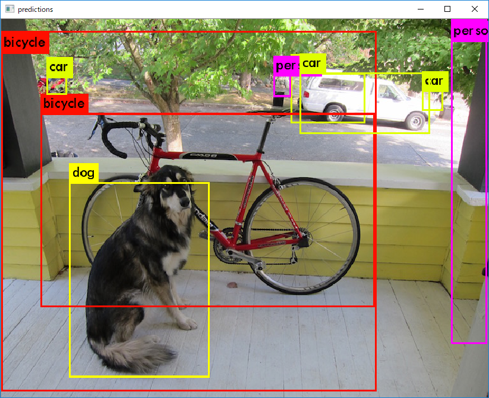

Introduction
先月初めくらいに仕事で YOLOv2 (You Only Look Once v2) の検証をしていた矢先、突如現れた YOLOv3。
検証したくとも忙しいのと、自宅は750 Ti、会社で自由に使えるGPUマシンも750 Tiと検証するには、いささか物足りない状態でした。
が、今月頭に自宅の開発機を一新。
- Intel i7-8700 3.20GHz
- 32GB RAM
- Nvidia GeForce GTX 1080
を搭載し、一気に環境がグレードアップ。
GWに入ってもモチベーションが維持できていたため検証してみました。
Try out!!
と言っても、GPUが乗っているマシンはWindows。別にUbuntu入れても良いんですが、デュアルブートにしたいので放置。
なので、YOLOを実装している深層学習フレームワーク Darknet のWindows版を試すことに。
仕事でも上のリポジトリにはお世話になりました。
今回もこれを使います。
使い方は上に書いてあるとおり。
- OpenCV 3.4.0
- cuDNN 7.0
- CUDA 9.1
を用意して、環境変数追加、C++のプロジェクトファイルの書き換えだけです。
なので省略!! 肝心の比較。
テスト画像はお馴染みの自転車と犬と車 (768x576)。
ちなみに公式ページと結果が異なるのは、Windows版であるからだとおもいますが、劇的に違うわけでは無いので無視。
YOLOV2
1 | D:\Works\Local\darknet\build\darknet\x64> .\darknet.exe detect cfg\yolov2.cfg yolov2.weights data\dog.jpg |
YOLOV3
1 | PS D:\Works\Local\darknet\build\darknet\x64> .\darknet.exe detect cfg\yolov3.cfg yolov3.weights data\dog.jpg |
Tiny YOLO
1 | D:\Works\Local\darknet\build\darknet\x64> .\darknet.exe detect .\cfg\yolov2-tiny.cfg .\yolov2-tiny.weights .\data\dog |
Compare!!
GPUの性能が良いからなのか、速度が恐ろしいことになっています。
リアルタイムいけるやん(震え声)
|項目|YOLOv3|YOLOv2|Tiny YOLO|
|:—|:—|:—|:—|:—|
|Speed|0.027030 sec (27ms)|0.012998 sec (12ms)|0.005972 sec (5ms)|
|Layer Num|106|31|15|
|Detected Object|dog: 99%|dog: 82%|dog: 82%|
||bicycle: 99%|bicycle: 82%|car: 73%|
||truck: 93%|truck: 74%|bicycle: 59%|
||car: 25%|bicycle: 25%|car: 41%|
|||pottedplant: 24%|car: 30%|
||||person: 28%|
||||person: 26%|
||||bicycle: 26%|
||||car: 24%|
画像の結果は下記。

YOLOv3
{kind=link}

YOLOv2
{kind=link}

Tiny YOLO
{kind=link}
層が3倍になったからといって単純に速度が1/3という訳では無いですが、精度向上しても、これだけの速度低下なのは凄いことです。
YOLOv3の出力を見ると、Shortcut Layer という単語が頻出していますが、これはResidual Networkですかね。
論文を見ると確かにそう書いてあります。
We use a new network for performing feature extraction. Our new network is a hybrid approach between the network used in YOLOv2, Darknet-19, and that newfangled residual network stuff.
我々は特徴抽出を行う新しいネットワークを使用する。
我々の新しいネットワークは、YOLOv2、Darknet-19、そして、あの最新式のResidualネットワークで使われているネットワークのハイブリットなアプローチだ。
こいつは凄い(小並感)
ところでYOLOv4は何時ですかね(すっとぼけ)